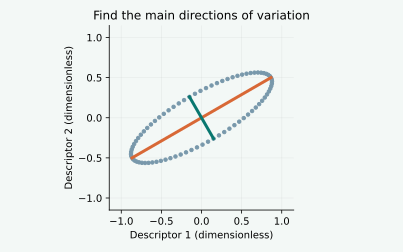
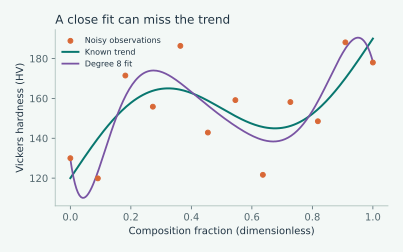

SVD, explained with a small picture
Use familiar examples and add picture layers to understand SVD before starting the PCA tutorial. No matrix knowledge required.
Read and explore →New · October 8, 2026
Articles and a step-by-step tutorial with interactive examples. Change the inputs and see what happens.
Use familiar examples and add picture layers to understand SVD before starting the PCA tutorial. No matrix knowledge required.
Read and explore →
Build PCA one code cell at a time, then compare an image with its reconstruction. Includes a notebook and interactive self-checks.
Start the tutorial →
Rotate a point cloud and see how PCA finds its main directions of variation.
Read and explore
Change model complexity and noise, then compare fitting error with prediction of the known trend.
Read and exploreCount possible alloy compositions and see how processing choices multiply the search.
Read and exploreGenerally, most researchers (experimentalists) conduct innumerable experiments to reach the final target. In this process, we generate tons of data that involves enormous consumption of energy, resources, and, most importantly, time. The whole activity has a direct impact on our climate, too. Therefore, designing and performing relevant experiments by analyzing pre-existing data to predict new or improved materials via materials informatics and analytics is the need of the hour.
Click on blogs and tutorials to begin your adventure with materials data.
September 2024
August 2024
April 2024
I am Joyita Bhattacharya, PhD, a materials scientist and educator with expertise in microscopy, materials characterization, materials informatics, and machine learning. Through this website, I share tutorials, practical examples, and research-inspired articles that help students, researchers, and engineers apply modern data science techniques to real materials science problems.
Whether you are taking your first steps in materials informatics or looking to deepen your expertise, I hope these resources help you analyze data more effectively, interpret results with greater confidence, and discover new insights from materials datasets. Explore the tutorials to build practical skills, or browse the blog for applications, case studies, and discussions at the intersection of materials science, microscopy, and data analytics.
Here is the link to my LinkedIn profile.
bjoyita@gmail.com